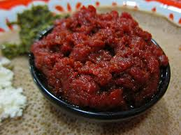

Ketfo
Home

Description
Kitfo is an Ethiopian traditional dish that originated among the Gurage people. It consists of minced raw beef, marinated in mitmita and niter kibbeh. The word comes from the Ethio-Semitic triconsonantal root k-t-f, meaning "to chop finely; mince". Kitfo cooked lightly rare is known as kitfo leb leb.
Ingredients
- 2 pounds lean beef, such as boneless knuckle or top round
- 1/2 cup kibbeh (seasoned clarified butter) or ghee
- 2 tablespoons mitmita (Ethiopian spiced chile blend)
- 1/4 teaspoon fine salt
Steps
- Cut the beef into thin slices, trim any fat and then mince into very small cubes, preferably by hand, or in a food processor.
- Melt the kibbeh in a medium skillet over very low heat. Add the mitmita, korerima, koseret and salt and stir with the butter.